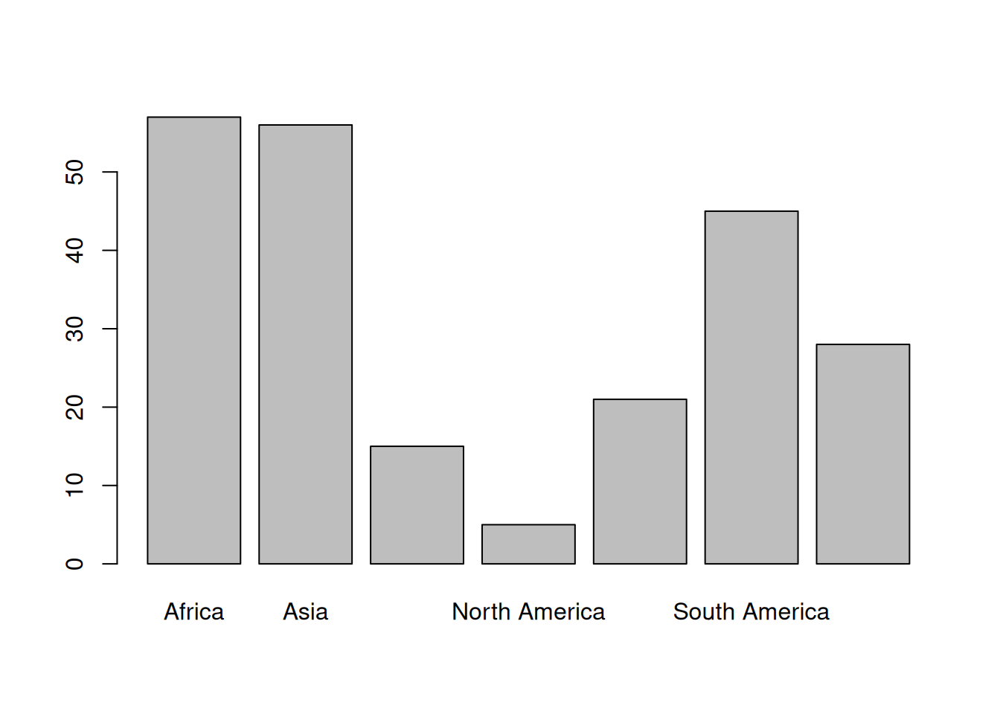
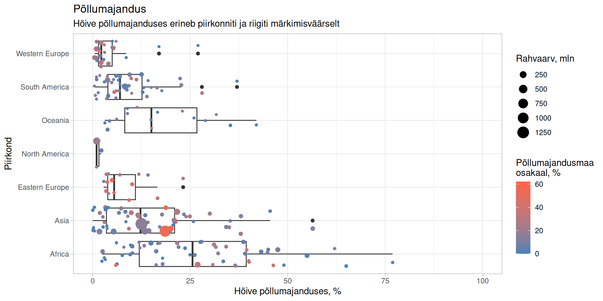

library('magrittr') # Laadime laienduse toru kasutamiseks
riigid <- read.csv('andmed/countries.csv')
names(riigid) %<>% strsplit('\\.') %>% sapply(`[`, 1) # Jätame veerunimetustes alles vaid enne punkti oleva7 Joonised
Andmete esitamine ilmekate joonistena võib tundunda lihtsakoelisena. Siiski on enamikes olukodades andmete visualiseerimine kasulikum kui nende esitamine mahuka teksti või keerukate tabelitena. Andmete visualiseerimine on teabe esitamine graafilisel kujul ja sellel on eelnevalt nimetatu ees mitu eelist (Saltz & Stanton, 2017):
- joonistelt saab teabe kätte kiiremini,
- erinevat teavet saab lugeda üheaegselt,
- lihtsam on tuvastada mustreid.
7.1 Joonistamise põhimõtted
Andmete vormistamisel joonistena võiks enamasti järgida alljärgnevaid soovitusi.
- Lisa joonisele nii vähe kui on võimalk ja nii palju kui on vajalik.
- Too esile see, mis on kõige olulisem.
- Esita kas mingi üldine muster või too välja pisiasjad, aga mitte mõlemaid korraga.
- Veendu, et telgede ulatus ega väärtuste teisendused ei kallutaks seda, mida andmed tegelikult näitavad.
- Mitme joonise kõrvutamisel veendu, et telgede ulatused on samad.
- Kujuta andmepunktid või muud joonise osised läbipaistvatena, et vältida kattuvusel tekkivat teabekadu.
- Ühenda andmepunktid joontega ainult siis, kui nende järjestusel on mingi tähendus. Nt aegridade korral on näitab joon muutumist ajas.
- Värvid peaksid olema seotud kujutatavate väärtuste tähendusega.
Värvide valikul on mitu põhimõtet, aga muuhulgas on oluline lähtuda tunnuse liigist ja väärtuste tähendusest (vt Crameri et al. (2020)). Üldiselt tuleks jälgida, et
- kõik värvid oleksid sama tugevusega (nt kollane on teistest värvidest heledam),
- järjestuse korral peaks värvide järjestus olema loogiline,
- keskmine väärtus peaks olema selgelt neutraalse värviga eristatud,
- nähtuste vastandamise korral peaks ka värviskaala olema vastanduv.
Sageli viidatakse ka viiele omadusele, mis iseloomustavad head joonist (Cairo, 2016):
- tõene (põhineb uurimustööl),
- kasulik (rakendatav mingil eesmärgil),
- ilus (kutsub vaatama),
- avav (võimaldab näha midagi teisest küljest),
- selgitav (pakub uusi teadmisi).
7.2 Jooniste liigid
Võimalikke viise jooniste vormistamiseks on lugematul hulgal. Üldiselt võib neid jooniseid eristada aga nelja omaduse alusel:
- eesmärk (vt allpool),
- mõõtmistase (kvantitatiivsed või kvalitatiivsed tunnused),
- mõõtmed (telgede arv),
- andmete kuju (praktikas tähtsusetu).
Kõige otstarbekam on joonise vormistuse valimisel lähtuda andmete visualiseerimise eesmärgist, milleks võib olla kujutada
- võrdlust (nt tulp-, punktjoonis),
- koostist (nt ring-, pindala-, puujoonis),
- vooge (Sankey joonis),
- muutust (joon),
- seost (nt hajumisjoonis, seosekaart),
- jaotust (nt histogramm, tihedus-, karpjoonis),
- ruumilist jaotust (punkt-, koropleetkaart),
- võrgustikku (võrgustikjoonis).
Enamus liike jooniseid võimaldavad visualiseerida ainult kvantitatiivselt mõõdetud ehk arvtunnuseid. Kvalitatiivseid tunnuseid saab joonistele lisada kas
- ühele telgedest,
- tekitades iga kvalitatiivse tunnuse väärtuse jaoks eraldi joonise,
- kujundades vastavalt tunnuse väärtustele joonise osiseid, nt punktide suurust, kuju või värvi.
7.3 Joonised R keeles
Alljärgnevates näidetes joonistamise näitlikustamieks võrdleme maailma riike.
R keeles saab tekitada lihtsaid jooniseid nagu punkt- ja ringjoonis nt sageduste kujutamiseks.
table(riigid$Region) %>% barplot
table(riigid$Region) %>% pieSamuti tuleb R keelega kaasa mitu funktsiooni väärtuste hajumise kujutamiseks, sh histogramm ning hajumis- ja karpjoonis. Need funktsioonid ei nõua eriti palju tähemärke, mistõttu on neid mugav kasutada andmete uurimiseks.
hist(riigid$Arable)plot(GDP ~ Phones, riigid)boxplot(GDP ~ Region, riigid)Eelnevad R keelega kaasas olevad funktsioonid on mõnevõrra piiratud ja igasuguste osiste muutmine joonistel on enamasti keerukas ja kohmakas. Seetõttu on kujunenud tavapäraseks, et joonised tekitatakse R keeles hoopis laienduses ggplot2 olevate funktsioonidega. Need pakuvad andmete joonistamiseks peaaegu piiramatult võimalusi.
Nt on ggplot2 kasutades lihtne kujutada korraga joonisel mitut tunnust.
library('ggplot2')
ggplot(riigid) +
aes(x = GDP, y = Phones, size = Population, color = Literacy) +
geom_point() +
facet_wrap(~Region) +
theme_light()Warning: Removed 4 rows containing missing values (geom_point).Andmeid saab kujutada väga erinevat liiki joonistel, kuvada jooniseid üksteise peal ja muuta kõiki joonise osiseid.
library('ggplot2')
ggplot(riigid) +
aes(x = Region, y = Agriculture*100, color = Arable) +
coord_flip() +
ylim(c(0,100)) +
geom_boxplot() +
geom_jitter(aes(size = Population/1e6)) +
labs(title = "Põllumajandus",
subtitle = "Hõive põllumajanduses erineb piirkonniti ja riigiti märkimisväärselt",
x = "Piirkond", y = "Hõive põllumajanduses, %",
size = "Rahvaarv, mln",
color = "Põllumajandusmaa\nosakaal, %") +
scale_color_gradient(low = 'steelblue', high = 'tomato') +
theme_light()Warning: Removed 15 rows containing non-finite values (stat_boxplot).Warning: Removed 16 rows containing missing values (geom_point).
Laienduse ggplot2 kasutamise kohta on internetis hulgaliselt selgitusi ja näiteid. Nt võib selle abil joonistamisel võtta kõrvale juhendi.